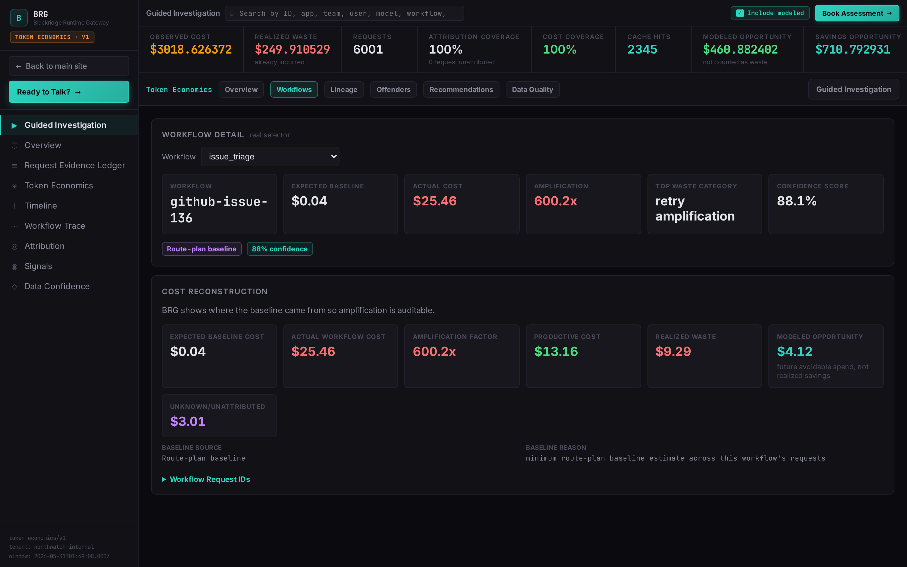
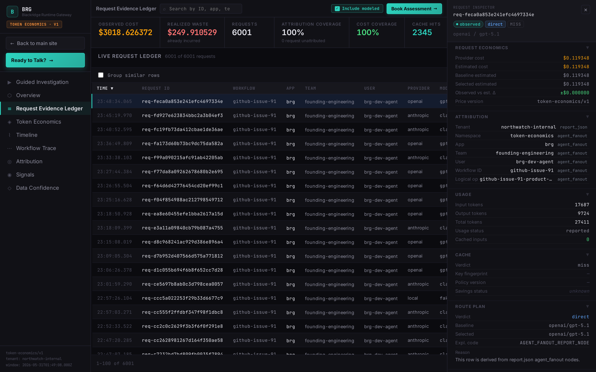

Page 1 — The number.
Total attributable leak for the period, with confidence bounds. This is the page the CFO reads.
This is the deliverable's structure — from a design-partner deployment, values re-scaled and identifying detail removed. This is the format finance received it in.
Total attributable leak for the period, with confidence bounds. This is the page the CFO reads.
The workflow graph showing which calls, retries, and context decisions produced the cost.
Plain-language root cause and what fixing it is worth, monthly and annualized.



Get a free spend leak review — a founder replies within 2 business days.